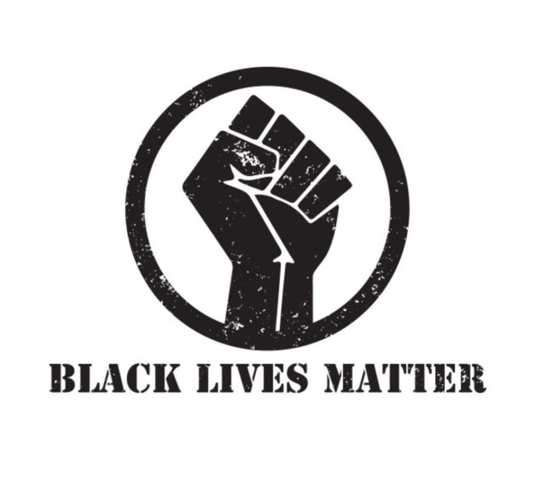
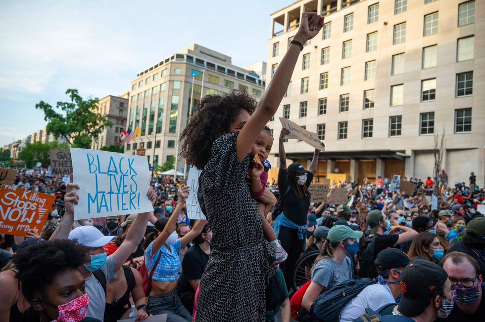
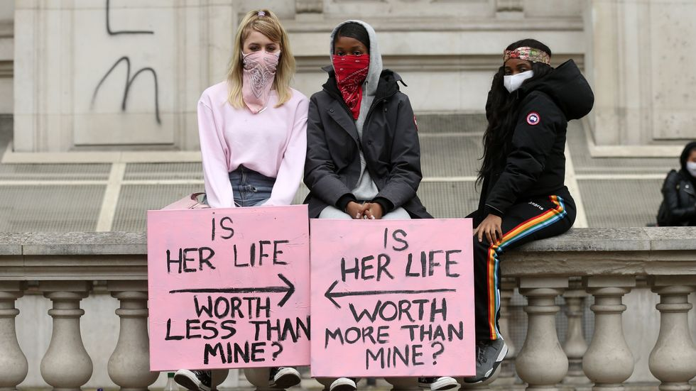

As times have changed so did the treatment of black people. Of course not all people share the same view; there will always be racist people, people that believe that their race is superior to others. Even today we face the similar problems due to this. In our present we have the“I can’t breathe/ Black Lives Matter movement”, a movement which has shook the U.S. to its core as it has revealed the true colors of their system. “I can’t breathe” is a slogan associated with the Black Lives Matter movement. The phrase originates from the last words of Eric Garner, an unarmed black man who was killed in 2014 after being put in a chokehold by New York City Police. A number of other African-Americans, such as Javier Ambler, Manuel Ellis, Elijah McClain, and George Floyd, have said the same phrase prior to dying during similar law-enforcement encounters. According to a 2020 report by the New York Times, the phrase has been used by over 70 people who died in police custody. Also the number “8:46” is a symbol of police brutality that is associated with the May 25, 2020 killing of George Floyd, who died after an officer knelt on his neck for almost 9 minutes. This event resulted in many protests against unnecessary police brutality or any form of racially motivated violence. Even if we face the similar problems that we’ve faced in the past, we improve step by step.
  A sign of improvement is shown in Belgium as it acknowledges its bloody colonial past and takes action regarding the problem. Not only that, but statues of racist historical figures were vandalized or removed in Britain and the US, thus Leopold II's days on Belgian streets could now be numbered. At the Berlin conference Leopold II was granted land to forge a personal colony, which he called Congo Free State. It quickly became a brutal, exploitative regime that relied on forced labor to cultivate and trade rubber, ivory and minerals. In one photo, a man sits on a low platform looking at a dismembered small foot and small hand. They belonged to his five-year-old daughter, who was later killed when her village did not produce sufficient rubber. She was not unique - chopping off the limbs of enslaved Congolese was a routine form of retribution when Leopold II's quotas were not met.
A man sits on a low platform looking at a dismembered small foot and small hand. They belonged to his five-year-old daughter, who was later killed when her village did not produce sufficient rubber.
Even though Leopold II has never set foot in this country, he poured the profits into Belgium and his pockets. It has been decided that statues of Leopold II should now be housed in museums rather than in public places. Beyond removal of statues, far more work is required to dismantle racism, protesters and black communities argue. We might think of these as signs of improvement but we still have to fix many mistakes made in the past and have the courage to prevent any more mistakes yet to be made. All that we can do is to try to make a better future for all of us, a tomorrow in which we are not defined by our outer appearance, or someone’s perception of us.